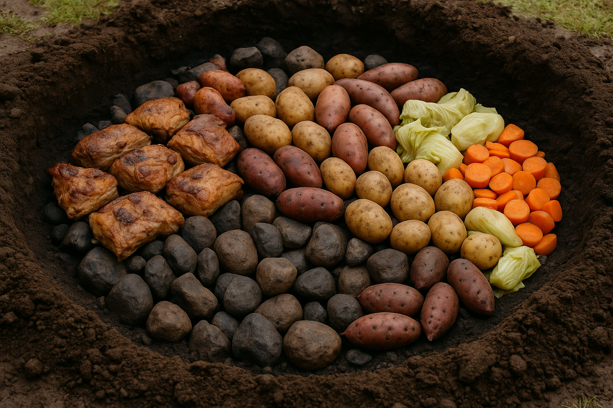

Hangi
Comida tradicional maorí cocida bajo tierra, utilizando piedras calentadas. Combina carne, patatas, kumara y otras verduras.
- Origen: Cultura maorí.
- Características: cocción bajo tierra, sin aditivos, muy sabrosa y jugosa.
- Curiosidad: el hangi suele ser parte de festivales, bodas y eventos comunitarios.
